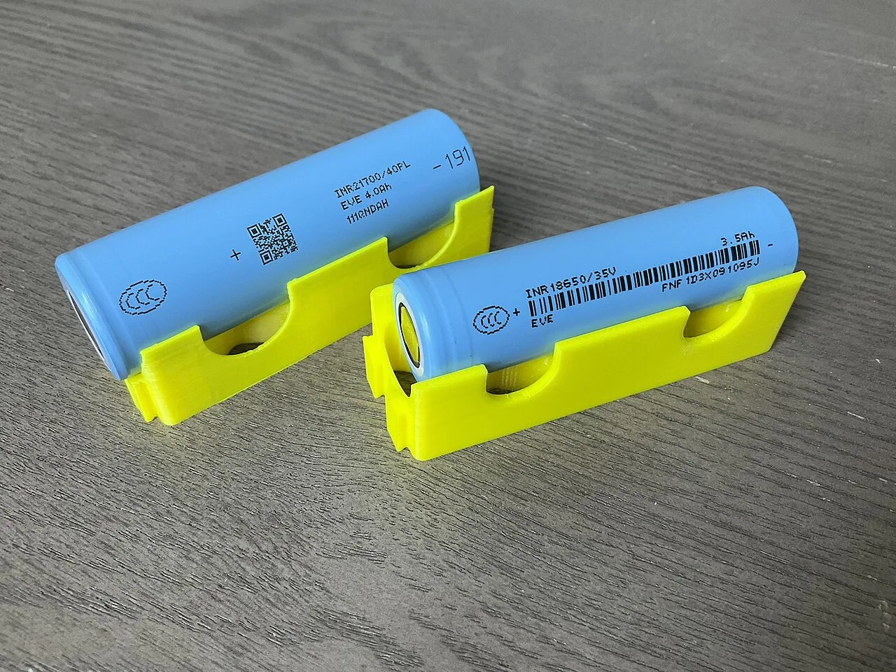

Electromotive force and internal resistance
Why do the headlights of a car dim for a moment when the engine is started on a cold winter morning?
Prior knowledge
- Kirchhoff's voltage law: the sum of the changes of potential around a loop is zerochapter Kirchhoff's laws and potential in a circuit
- The voltage of a resistor is $U = RI$chapter Resistance and Ohm's law
- Electric power is $P = UI$chapter Electric power and the heating of a resistor
Core path: follow the steps in order. Besides calculations, the core path includes investigations, explanations and graphs. Tasks marked Optional give extra practice. Optional tasks: 4.
Think about it
It is a freezing morning, and the headlights of a car are already on. When the driver turns the key to the start position, the headlights dim clearly for a few seconds and brighten again once the engine has started. The battery is the same, and the headlights are connected to its terminals the whole time.
Why do lamps connected to the terminals of the same battery dim when a large current is drawn from the battery at the same time by another device?
Optional Review: the voltage law
Predict
Make your predictions before investigating 2 questions
Prediction 1: terminal voltage and current
Prediction 2: two batteries in parallel
Investigate
Simulation
How to use
Battery chooses a new or a used battery and Connection one battery, two in series or two in parallel. Inside the dashed line the battery is drawn as its model: the source voltage $E$ and the internal resistance $R_\text{s}$. Switch opens or closes the circuit, and the slider sets the load resistance $R$. The voltmeter is connected to the terminals of the battery, so it shows the terminal voltage $U$, and the ammeter shows the current $I$. Mark point adds the readings to the $(I, U)$ graph on the right (below on a phone). When there are at least two points for the same battery and connection, a blue dashed line fitted to the points is drawn on the graph and extended to the axes. The purple dots show the direction of the current, and the orange glow shows how much electrical energy is changed into internal energy of the battery.
Assumptions of the model
The battery is an ideal voltage source with a constant internal resistance in series. The wires and the ammeter have no resistance, and the voltmeter draws no current. The source voltage and the internal resistance of a real battery change slightly with the current, the temperature and use, and the meter readings have uncertainty, so real measured points do not lie exactly on a straight line. The numbers are values calculated by the model, not measurements.
How the calculation works
When the switch is closed, Kirchhoff's voltage law gives for the loop $E - R_\text{s} I - R I = 0$, so the current is
$$I = \frac{E}{R + R_\text{s}}$$
The voltmeter shows the terminal voltage $U = E - R_\text{s} I$, which is also the voltage $RI$ of the load resistor. When the switch is open, $I = 0$ and $U = E$. For two batteries in series the source voltage is $2E$ and the internal resistance $2R_\text{s}$, and for two in parallel the source voltage is $E$ and the internal resistance $R_\text{s} : 2$. The glow grows with the power $R_\text{s} I^2$ changed in the internal resistance of the battery. The fitted line is the least-squares line through the marked points.
Choose a battery and a connection, adjust the load resistance and mark the meter readings on the graph. Where on the graph can the source voltage and the internal resistance be found?
Experiment 1: terminal voltage as a function of the current
Test prediction 1. The new battery, one battery and a closed switch are kept constant; change only the load resistance $R$. Record the terminal voltage and the current with at least three resistances, for example $1.0\,\Omega$, $2.0\,\Omega$, $4.0\,\Omega$ and $8.0\,\Omega$, and mark each point on the graph too. How does the terminal voltage change as the current grows?
Initial state: battery: new battery, connection: one battery, switch: closed, load resistance $R$ = $2\,\Omega$. Kept constant: battery, connection, switch. Varied: load resistance $R$.
| load resistance $R$ | $I$ $(\text{A})$ | $U$ $(\text{V})$ |
|---|
From two rows of your table that are far apart, determine the internal resistance $R_\text{s}$ of the battery. Give the answer in ohms.
Hint 1: a guiding question
The terminal voltage is $U = E - R_\text{s} I$. By how much does the terminal voltage decrease when the current grows from one row to the other?
Hint 2: what is the connection
Choose, for example, the rows $R = 1.0\,\Omega$ and $R = 4.0\,\Omega$. Calculate the change $\Delta U$ of the terminal voltage and the change $\Delta I$ of the current.
Hint 3: an intermediate step
With the values of the model
and $R_\text{s} = -\Delta U : \Delta I$.
Show the solution
Given
the readings of the model for the new battery, for example in the row $R = 1.0\,\Omega$ the current $I_1 = 1.333\,\text{A}$ and the terminal voltage $U_1 = 1.333\,\text{V}$, and in the row $R = 4.0\,\Omega$ the current $I_2 = 0.381\,\text{A}$ and the terminal voltage $U_2 = 1.524\,\text{V}$
Find
the internal resistance $R_\text{s}$ in ohms
Principle
The model is the same for all loads: the source voltage $E$ and the internal resistance $R_\text{s}$ stay constant. Then the terminal voltage $U = E - R_\text{s} I$ decreases by $R_\text{s}$ for every ampere of current, so in the difference of two rows $E$ cancels and only $R_\text{s}$ is left. Rows far apart give large differences, so the rounding of the readings has the smallest effect.
Formula
$U_1 = E - R_\text{s} I_1$ and $U_2 = E - R_\text{s} I_2$, so by subtracting
Conversions
Not needed: $1\,\text{V} : 1\,\text{A} = 1\,\Omega$.
Substitution
Answer
$0.20\,\Omega$
Two significant figures like the difference of the voltages $0.19\,\text{V}$.
Reasonableness
The source voltage is
and this is exactly the value where the fitted line of the graph meets the vertical axis. The internal resistance is small compared with the loads $1$–$8\,\Omega$, so the terminal voltage always stays close to the source voltage, as one expects of a new battery.
More to investigate 3 tasks
Experiment 2: one battery, in series and in parallel
Test prediction 2. The new battery, a closed switch and a load resistance of $1.0\,\Omega$ are kept constant; change only the connection. Record the terminal voltage and the current for all three connections. Which connection gives the largest terminal voltage, and by how much does the parallel connection change it compared with one battery?
Initial state: battery: new battery, connection: one battery, switch: closed, load resistance $R$ = $1\,\Omega$. Kept constant: battery, switch, load resistance $R$. Varied: connection.
| connection | $I$ $(\text{A})$ | $U$ $(\text{V})$ |
|---|
Optional Experiment 3: the used battery
The used battery, one battery and a closed switch are kept constant; change only the load resistance. Record the terminal voltage and the current with at least three resistances and mark the points on the graph. Finally open the switch and look at what the voltmeter shows. How does the line of the used battery differ from the line of the new battery?
Initial state: battery: used battery, connection: one battery, switch: closed, load resistance $R$ = $2\,\Omega$. Kept constant: battery, connection. Varied: load resistance $R$.
| load resistance $R$ | $I$ $(\text{A})$ | $U$ $(\text{V})$ |
|---|
Conclusion: the model of a battery
On the basis of your tables, write: how does the terminal voltage depend on the current, and where on the graph can the source voltage and the internal resistance be found? What did the series and parallel connections do to the terminal voltage with a load of $1.0\,\Omega$?
Model answer
The terminal voltage of the new battery decreased steadily as the current grew: at a current of $0.195\,\text{A}$ it was $1.561\,\text{V}$ and at $1.333\,\text{A}$ only $1.333\,\text{V}$, and the points lay on a descending straight line. The line meets the vertical axis at the source voltage $1.60\,\text{V}$, because without a current the terminal voltage is the source voltage. The slope of the line gives the internal resistance: $0.191\,\text{V} : 0.952\,\text{A} \approx 0.20\,\Omega$. With a load of $1.0\,\Omega$ the terminal voltage of one battery was $1.333\,\text{V}$, of two in series $2.286\,\text{V}$ and of two in parallel $1.455\,\text{V}$. The series connection doubles the source voltage, but also the internal resistance. The parallel connection keeps the source voltage the same and halves the internal resistance, so the terminal voltage grows only a little. The values are calculated by the model: in the model the source voltage and the internal resistance are constants.
Assess your own answer
Tick the points your own answer already contains.
Theory
Key idea
A battery is a source and a resistor together
In a battery, chemical reactions separate charges from each other and maintain a voltage between the terminals. The source voltage $E$ of a battery (also called its electromotive force, or emf) tells how much energy the battery gives to each unit of charge passing through it: a source voltage of $1.5\,\text{V}$ means an energy of $1.5\,\text{J}$ for every coulomb. However, the current also passes inside the battery, through the electrolyte and the electrodes, and they have resistance too. This is called the internal resistance $R_\text{s}$ of the battery. A battery can therefore be described by a model in which an ideal voltage source $E$ is in series with a resistor $R_\text{s}$. In the chapter Kirchhoff's laws and potential in a circuit the source was ideal; now its own resistance is taken into account.
The terminal voltage decreases as the current grows
The voltage between the terminals of a battery is called the terminal voltage $U$. When a current $I$ is drawn from the battery, the potential rises in the ideal source by the source voltage $E$, but it drops in the internal resistance by the voltage $R_\text{s} I$, as in any resistor. The potential of the positive terminal relative to the negative terminal is therefore $E - R_\text{s} I$. In terms of energy, of each coulomb to which the source gives an energy $E$, a part $R_\text{s} I$ is changed into internal energy of the battery itself, and only the rest, $U$, is transferred to the external circuit. That is why a battery warms up when a large current is drawn from it.

The source voltage is measured without a current
When no current is drawn from the battery, the voltage $R_\text{s} I$ across the internal resistance is zero, and the terminal voltage is equal to the source voltage. The source voltage can therefore be measured by connecting just a voltmeter to the terminals of the battery, because a good voltmeter draws only a vanishingly small current. A new AA battery gives about $1.6\,\text{V}$ this way. The source voltage of a used battery can be almost as large, but its internal resistance has grown many times over. A voltmeter alone therefore does not reveal whether a battery is still usable: only under load does its terminal voltage drop clearly.
A car battery at starting
The internal resistance of a car battery is very small, only hundredths of an ohm. However, the starter motor draws a current of hundreds of amperes for a moment, so the voltage $R_\text{s} I$ across the internal resistance of the battery is volts, and the terminal voltage drops clearly. The headlights are connected to the same terminals, so their voltage and power decrease for the same moment, and they dim. In the cold the chemical reactions of the battery slow down and the internal resistance grows, so the effect is stronger in frost.
Short circuit
In a short circuit the terminals of a battery are connected by a conductor whose resistance is almost zero. Then the terminal voltage is almost zero, and only the internal resistance limits the current. The short-circuit current is the largest current that can be obtained from a battery: for a new AA battery it is about $1.60\,\text{V} : 0.20\,\Omega = 8.0\,\text{A}$, and for a car battery over a thousand amperes. The whole power of the source is then changed into internal energy of the battery and the conductor. The conductor may become red hot, and the battery may leak or heat up dangerously; a lithium battery may even catch fire. The terminals of a battery must therefore never be connected directly with a conductor, and loose batteries are not carried in a pocket with keys or coins.
Terminal voltage and short-circuit current
The terminal voltage of a battery when a current $I$ is drawn from it is
$$U = E - R_\text{s} I$$
where $U$ is the terminal voltage ($\text{V}$), $E$ the source voltage ($\text{V}$), $R_\text{s}$ the internal resistance ($\Omega$) and $I$ the current drawn from the battery ($\text{A}$). The model assumes that $E$ and $R_\text{s}$ stay constant. In a real battery they change slightly with the current, the temperature and the use of the battery.
When a load resistor $R$ is connected to the battery, Kirchhoff's voltage law gives for the loop $E - R_\text{s} I - R I = 0$. The current is therefore
$$I = \frac{E}{R + R_\text{s}}$$
where $R$ is the resistance of the external circuit ($\Omega$). The internal resistance acts like an additional resistor in series with the load. In a short circuit $R = 0$, and the current is the short-circuit current
$$I_\text{k} = \frac{E}{R_\text{s}}$$
where $I_\text{k}$ is the short-circuit current ($\text{A}$).
Source voltage and internal resistance from a graph
The terminal voltage decreases steadily as the current grows, so the $(I, U)$ graph of a battery is a descending straight line. It meets the vertical axis at $U = E$, because without a current the terminal voltage is the source voltage, and the horizontal axis at the short-circuit current $I_\text{k}$. The slope of the line is $-R_\text{s}$, so the internal resistance is obtained from a triangle of the slope: $R_\text{s} = -\Delta U : \Delta I$. For the battery in the figure the terminal voltage decreases by $0.60\,\text{V}$ when the current grows by $2.0\,\text{A}$, so $R_\text{s} = 0.60\,\text{V} : 2.0\,\text{A} = 0.30\,\Omega$.
The internal resistance is determined experimentally as follows. An adjustable load resistor is connected to the battery, an ammeter in series and a voltmeter across the terminals of the battery. The terminal voltage and the current are measured with several values of the load, the points are plotted in an $(I, U)$ coordinate system and a straight line is fitted to them. In real series of measurements the points do not usually lie exactly on the same line because of measurement uncertainty. The source voltage is read from where the line meets the vertical axis, and the internal resistance is calculated from the slope of the line, read from the line at two points far apart. The short-circuit current is not measured, because a short circuit could damage the battery. It is calculated from the equation $I_\text{k} = E : R_\text{s}$ or obtained by extending the line to the horizontal axis. Extending beyond the range of measurement assumes that the internal resistance stays the same at large currents too.
Batteries in series and in parallel
When batteries are connected in series, so that the positive terminal of each is connected to the negative terminal of the next, the rises of potential are added, and all the internal resistances are in the same loop one after the other. The source voltage and the internal resistance of the group are
$$\begin{aligned} E &= E_1 + E_2 + \dots \\ R_\text{s} &= R_{\text{s}1} + R_{\text{s}2} + \dots \end{aligned}$$
where $E_1$, $E_2$, … are the source voltages of the individual batteries ($\text{V}$) and $R_{\text{s}1}$, $R_{\text{s}2}$, … their internal resistances ($\Omega$). Three batteries in series in a torch give about $4.5\,\text{V}$. A battery put in the wrong way round reduces the source voltage of the group by its own amount, but its internal resistance is still added to the others.
When $n$ identical batteries are connected in parallel, the positive terminals together and the negative terminals together, the source voltage of the group is the same as for one battery. The internal resistances are parallel branches among which the current is shared equally, so the internal resistance of the group is
$$R_\text{s} = \frac{R_{\text{s}1}}{n}$$
where $R_{\text{s}1}$ is the internal resistance of one battery ($\Omega$). Two new AA batteries in series give a source voltage of $3.20\,\text{V}$ and an internal resistance of $0.40\,\Omega$, and in parallel $1.60\,\text{V}$ and $0.10\,\Omega$. A parallel connection therefore does not raise the voltage, but it gives a larger current with a smaller drop of the terminal voltage. Only identical and equally full batteries are connected in parallel: otherwise the battery with the larger source voltage drives a current through the other, and both warm up for nothing.
Common misconception
Many people think that a battery always gives the same current or that a battery holds a certain amount of current in store. A battery maintains an almost constant source voltage, and the current is determined by the resistance of the whole circuit: $I = E : (R + R_\text{s})$. The same battery gives a large current to a small load resistance and a small current to a large one. Nor is current used up in a battery, but chemical energy, which the source changes into electrical energy.
Another misconception is that the voltage of a battery is always the $1.5\,\text{V}$ printed on it. The marking gives the source voltage only approximately. The terminal voltage is smaller the larger the current drawn from the battery and the larger the internal resistance of the battery. A third mistake is to think that a parallel connection doubles the voltage: the source voltage of identical batteries in parallel is the same as for one, and only the internal resistance decreases.
Summary
- A battery is described by a model in which an ideal source with source voltage $E$ is in series with the internal resistance $R_\text{s}$.
- The terminal voltage is $U = E - R_\text{s} I$: it decreases as the current grows. Without a current the terminal voltage is the source voltage.
- With a load resistor the current is $I = E : (R + R_\text{s})$. The short-circuit current $I_\text{k} = E : R_\text{s}$ is the largest possible current, and a short circuit is dangerous.
- The $(I, U)$ graph of a battery is a descending straight line: it meets the vertical axis at the source voltage, and its slope is $-R_\text{s}$.
- The source voltages and the internal resistances of batteries in series are added. The source voltage of identical batteries in parallel is the same as for one, and the internal resistance is $R_{\text{s}1} : n$.
Optional Return to your predictions
Compare your predictions with the values of the model in the experiments and with the model of a battery. Then return to the question at the beginning: why do the headlights of a car dim when the starter motor draws a large current from the battery?
Would you change your prediction?
Examples
Once you have studied the chapter's theory, move on to the guided examples. In the first you follow a worked solution step by step; in the next ones you make the choices yourself, and the hints help if you get stuck.
Example 1: Internal resistance of an AA battery
Just a voltmeter is connected to the terminals of a new AA battery, and it shows $1.58\,\text{V}$. When a resistor of $4.0\,\Omega$ is also connected to the battery, the voltmeter shows $1.45\,\text{V}$. What is the internal resistance of the battery, and what would be its short-circuit current?
Step 1/7
Given and find. The voltage measured without a current is $1.58\,\text{V}$, the terminal voltage measured under load is $U = 1.45\,\text{V}$ and the load resistance is $R = 4.0\,\Omega$. We are asked for the internal resistance $R_\text{s}$ and the short-circuit current $I_\text{k}$.
Step 2/7
Principle. A voltmeter draws a vanishingly small current, so without a load it shows the source voltage: $E = 1.58\,\text{V}$. Under load the meter shows the terminal voltage, which is also the voltage of the resistor, so Ohm's law gives the current. The internal resistance is solved from the equation of the terminal voltage, and the short-circuit current from that.
Step 3/7
Formula solved.
$$\begin{aligned} I &= \frac{U}{R} \\ U &= E - R_\text{s} I \\ R_\text{s} &= \frac{E - U}{I} \\ I_\text{k} &= \frac{E}{R_\text{s}} \end{aligned}$$
Step 4/7
Conversions. Not needed: all the quantities are in base units, and $1\,\text{V} : 1\,\text{A} = 1\,\Omega$.
Step 5/7
Substitution. $$\begin{aligned} I &= \frac{U}{R} \\ &= \frac{1.45\,\text{V}}{4.0\,\Omega} = 0.3625\,\text{A} \\ R_\text{s} &= \frac{E - U}{I} \\ &= \frac{1.58\,\text{V} - 1.45\,\text{V}}{0.3625\,\text{A}} \\ &= 0.3586\,\Omega \\ I_\text{k} &= \frac{E}{R_\text{s}} \\ &= \frac{1.58\,\text{V}}{0.3586\,\Omega} = 4.406\,\text{A} \end{aligned}$$
Step 6/7
Answer. The internal resistance is about $0.36\,\Omega$ and the short-circuit current about $4.4\,\text{A}$. The results are given to two significant figures, because the difference of the voltages, $0.13\,\text{V}$, and the resistance $4.0\,\Omega$ are known to two figures.
Step 7/7
Reasonableness. Substitute the result back: $0.3586\,\Omega \cdot 0.3625\,\text{A} = 0.13\,\text{V}$, and $1.58\,\text{V} - 0.13\,\text{V} = 1.45\,\text{V}$ is the measured terminal voltage. The internal resistance is much smaller than the load $4.0\,\Omega$, so the terminal voltage is only a little smaller than the source voltage. The short-circuit current is a few amperes, as it should be for an AA battery.
Example 2: Find the error
Example 3: Apply to a new situation
The source voltage of a car battery is $12.6\,\text{V}$ and its internal resistance $0.012\,\Omega$. When starting, the starter motor draws a current of $180\,\text{A}$ from the battery. The headlights are connected to the terminals of the battery, and their own current is small compared with the starting current.
What is the terminal voltage of the battery during starting? Give the answer in volts.
Hint 1: a guiding question
The voltage of the headlights is the terminal voltage of the battery. What determines how much smaller the terminal voltage is than the source voltage?
Hint 2: what is the connection
The terminal voltage is $U = E - R_\text{s} I$, where $I$ is the current drawn from the battery.
Hint 3: an intermediate step
The voltage across the internal resistance is $0.012\,\Omega \cdot 180\,\text{A} = 2.16\,\text{V}$.
Show the solution
Given
source voltage $E = 12.6\,\text{V}$, internal resistance $R_\text{s} = 0.012\,\Omega$, starting current $I = 180\,\text{A}$; the current of the headlights is neglected
Find
the terminal voltage $U$ of the battery in volts
Principle
The battery is described as an ideal source with an internal resistance in series. When a current is drawn from the battery, the potential drops by the voltage $R_\text{s} I$ in the internal resistance, so a terminal voltage smaller than the source voltage is left between the terminals. The headlights are connected to the same terminals, so the terminal voltage is also their voltage.
Formula
$U = E - R_\text{s} I$
Conversions
Not needed: $1\,\Omega \cdot 1\,\text{A} = 1\,\text{V}$.
Substitution
Answer
$10.4\,\text{V}$
To a tenth of a volt like the source voltage $12.6\,\text{V}$; the voltage across the internal resistance, $2.2\,\text{V}$, is known to two significant figures.
Reasonableness
The terminal voltage drops by about $2\,\text{V}$, a sixth. The power of a headlight is proportional to the square of the voltage when its resistance stays about the same, so the power decreases to about $(10.44 : 12.6)^2 \approx 0.69$ times, and the lights dim clearly. The short-circuit current of the battery would be $12.6\,\text{V} : 0.012\,\Omega = 1050\,\text{A}$, so $180\,\text{A}$ is less than a fifth of it, as it should be for a starter motor.
Exercises
Level 1 · basic practice 8 exercises
One formula or one step of reasoning. Core exercises first, the rest is extra practice.
- Exercise 8-1Core
The source voltage of a battery is $1.58\,\text{V}$ and its internal resistance $0.25\,\Omega$. A current of $0.80\,\text{A}$ is drawn from the battery.
What is the terminal voltage of the battery?
Answer
$1.38\,\text{V}$
Show the solution
Given
source voltage $E = 1.58\,\text{V}$, internal resistance $R_\text{s} = 0.25\,\Omega$, current $I = 0.80\,\text{A}$
Find
the terminal voltage $U$ in volts
Principle
A battery is an ideal source with an internal resistance in series. When a current is drawn from the battery, the potential drops in the internal resistance by the voltage $R_\text{s} I$, so a voltage smaller than the source voltage is left between the terminals.
Formula
$U = E - R_\text{s} I$
Conversions
Not needed: $1\,\Omega \cdot 1\,\text{A} = 1\,\text{V}$.
Substitution
$U$$= 1.58\,\text{V} - 0.25\,\Omega \cdot 0.80\,\text{A}$$= 1.58\,\text{V} - 0.20\,\text{V}$$= 1.38\,\text{V}$Answer
$1.38\,\text{V}$
To a hundredth of a volt like the source voltage $1.58\,\text{V}$.
Reasonableness
The terminal voltage is smaller than the source voltage, as it should be for a battery that is giving a current. The voltage across the internal resistance, $0.20\,\text{V}$, is about an eighth of the source voltage, which fits the fairly large current $0.80\,\text{A}$.
- Exercise 8-2
A rechargeable nickel-metal hydride cell has a source voltage of $1.30\,\text{V}$ and an internal resistance of $0.040\,\Omega$.
What current would flow if the terminals of the cell were connected in a short circuit with a thick wire whose resistance is neglected?
Answer
$33\,\text{A}$
Show the solution
Given
source voltage $E = 1.30\,\text{V}$, internal resistance $R_\text{s} = 0.040\,\Omega$; the resistance of the short-circuit conductor is neglected
Find
the short-circuit current $I_\text{k}$ in amperes
Principle
In a short circuit the resistance of the external circuit is zero, so by Kirchhoff's voltage law the whole source voltage is left across the internal resistance of the cell. Only the internal resistance limits the current.
Formula
$E - R_\text{s} I_\text{k} = 0$, from which $I_\text{k} = \dfrac{E}{R_\text{s}}$
Conversions
Not needed: $1\,\text{V} : 1\,\Omega = 1\,\text{A}$.
Substitution
$I_\text{k}$$= \dfrac{1.30\,\text{V}}{0.040\,\Omega}$$= 32.5\,\text{A}$Answer
$33\,\text{A}$
Two significant figures like the internal resistance $0.040\,\Omega$.
Reasonableness
Estimate $1.3\,\text{V} : 0.04\,\Omega \approx 30\,\text{A}$. The internal resistance of a rechargeable cell is small, so the short-circuit current is tens of amperes: such a large current heats the conductor and the cell quickly, which is why a short circuit is dangerous.
- Exercise 8-3
A remote control has four batteries in series. The source voltage of each battery is $1.55\,\text{V}$. What is the source voltage of the group of batteries?
Answer
$6.20\,\text{V}$
Show the solution
Given
four batteries in series, the source voltage of each $E_1 = 1.55\,\text{V}$
Find
the source voltage $E$ of the group of batteries in volts
Principle
In a series connection the charge passes through each battery one after the other, and in each the potential rises by the source voltage. The batteries are the right way round, so the rises are added.
Formula
$E = E_1 + E_2 + E_3 + E_4$, and for identical batteries $E = 4E_1$
Conversions
Not needed: the voltages are in volts.
Substitution
$E$$= 4 \cdot 1.55\,\text{V}$$= 6.20\,\text{V}$Answer
$6.20\,\text{V}$
Three significant figures like the source voltage of a battery, $1.55\,\text{V}$.
Reasonableness
From a group of four $1.5\,\text{V}$ batteries one expects about $6\,\text{V}$, and the result is slightly larger, because the source voltage of a new battery is a little over the marking $1.5\,\text{V}$.
- Exercise 8-4
Three identical batteries are connected in parallel. The internal resistance of each battery is $0.45\,\Omega$. What is the internal resistance of the group of batteries?
Answer
$0.15\,\Omega$
Show the solution
Given
three identical batteries in parallel, the internal resistance of each $R_{\text{s}1} = 0.45\,\Omega$
Find
the internal resistance $R_\text{s}$ of the group of batteries in ohms
Principle
The internal resistances of batteries in parallel are parallel branches between the same two points. The batteries are identical, so the current is shared equally among them, and the internal resistance of the group is the internal resistance of one battery divided by the number of batteries.
Formula
$R_\text{s} = \dfrac{R_{\text{s}1}}{n}$
Conversions
Not needed: the resistance is in ohms.
Substitution
$R_\text{s}$$= \dfrac{0.45\,\Omega}{3}$$= 0.15\,\Omega$Answer
$0.15\,\Omega$
Two significant figures like the internal resistance $0.45\,\Omega$; the number of batteries, $3$, is an exact number.
Reasonableness
The resistance of a parallel connection is smaller than the resistance of any single branch, and $0.15\,\Omega < 0.45\,\Omega$. Check with the equation for resistors in parallel: $\tfrac{1}{R_\text{s}} = \tfrac{3}{0.45\,\Omega}$, so $R_\text{s} = 0.15\,\Omega$.
- Exercise 8-5
The graph shows the terminal voltage of a battery as a function of the current at four values of the load (points calculated from a model) and a straight line drawn through them and extended to the axes.
What is the short-circuit current of the battery? Read the value from the graph.
Answer
$3.0\,\text{A}$
Show the solution
Given
the points of the graph and the straight line drawn through them, extended to the axes
Find
the short-circuit current $I_\text{k}$ in amperes
Principle
In a short circuit the terminal voltage is zero. The $(I, U)$ graph of a battery is the straight line $U = E - R_\text{s} I$, so the short-circuit current is the current at which the line meets the horizontal axis. The short-circuit current was not measured but is obtained by extending the line drawn through the points.
Reading the graph
The line, extended with a dashed line, meets the horizontal axis $U = 0$ at the gridline $3.0\,\text{A}$. It meets the vertical axis at $4.5\,\text{V}$, which is the source voltage.
Formula
$U = E - R_\text{s} I_\text{k} = 0$, from which $I_\text{k} = \dfrac{E}{R_\text{s}}$; the value is read from where the line meets the horizontal axis.
Conversions
Not needed: the current is read in amperes.
Substitution
From the graph $I_\text{k} = 3.0\,\text{A}$.
Answer
$3.0\,\text{A}$
To two significant figures, because the value is read from a grid of $0.5\,\text{A}$.
Reasonableness
From the points on the line $(0.40\,\text{A}$; $3.9\,\text{V})$ and $(1.60\,\text{A}$; $2.1\,\text{V})$ we get
$R_\text{s}$$= 1.8\,\text{V} : 1.20\,\text{A}$$= 1.5\,\Omega$and
$I_\text{k}$$= E : R_\text{s}$$= 4.5\,\text{V} : 1.5\,\Omega$$= 3.0\,\text{A}$The result depends on the internal resistance staying the same outside the range of measurement.
- Exercise 8-6
The terminal voltage of a battery is measured with a voltmeter across the terminals of the battery.
When is the terminal voltage equal to the source voltage of the battery?
Answer
When no current is drawn from the battery, because then no voltage drop arises in the internal resistance.
Show the solution
Find
when the terminal voltage of a battery is equal to its source voltage.
Principle
The terminal voltage is $U = E - R_\text{s} I$, where $R_\text{s} I$ is the voltage drop in the internal resistance of the battery. The terminal voltage is the source voltage only when this voltage drop is zero, that is, when no current is drawn from the battery.
Model answer
The terminal voltage is equal to the source voltage when no current is drawn from the battery, because then no voltage drop arises in the internal resistance. If the current is large, the voltage drop is large and a voltage smaller than the source voltage is left across the terminals; the current is greatest in a short circuit, when the terminal voltage is zero. When the load resistance is equal to the internal resistance, the terminal voltage is only half of the source voltage. The claim that the voltages are always equal does not hold: the source voltage is a property of the battery, but the terminal voltage depends on the current drawn.
- Exercise 8-7Core
The terminals of a battery are connected with a short, thick wire whose resistance is almost zero (a short circuit). What happens then?
Answer
The current grows large, because only the internal resistance of the battery limits it any more.
Show the solution
Find
what happens in a short circuit of a battery.
Principle
The current is $I = E : (R + R_\text{s})$. In a short circuit the resistance of the external circuit is $R \approx 0$, so only the internal resistance of the battery limits the current, and the current is the short-circuit current $I_\text{k} = E : R_\text{s}$. In batteries $R_\text{s}$ is small, so the short-circuit current is large.
Model answer
In a short circuit the current grows large, because only the internal resistance of the battery limits it. The whole source voltage is left across the internal resistance, so the terminal voltage is almost zero and the internal energy of the battery grows quickly. That is why a short circuit is dangerous and can damage the battery. The current does not drop to zero or stay the same, because the current is determined by the resistance of the whole circuit, and the terminal voltage cannot exceed the source voltage.
- Exercise 8-8
The source voltage of a new battery is $1.50\,\text{V}$. When a current of $0.50\,\text{A}$ is drawn from the battery, its terminal voltage is $1.31\,\text{V}$.
What is the internal resistance of the battery?
Answer
$0.38\,\Omega$
Show the solution
Given
source voltage $E = 1.50\,\text{V}$, terminal voltage $U = 1.31\,\text{V}$, current $I = 0.50\,\text{A}$
Find
the internal resistance $R_\text{s}$ in ohms
Principle
The terminal voltage is smaller than the source voltage by the voltage drop $R_\text{s} I$ in the internal resistance. When the source voltage, the terminal voltage and the current are known, $R_\text{s}$ can be solved from the equation.
Formula
$U = E - R_\text{s} I$, from which $R_\text{s} = \dfrac{E - U}{I}$
Conversions
Not needed: $1\,\text{V} : 1\,\text{A} = 1\,\Omega$.
Substitution
$R_\text{s}$$= \dfrac{1.50\,\text{V} - 1.31\,\text{V}}{0.50\,\text{A}}$$= \dfrac{0.19\,\text{V}}{0.50\,\text{A}}$$= 0.38\,\Omega$Answer
$0.38\,\Omega$
Two significant figures like the current $0.50\,\text{A}$.
Reasonableness
The voltage drop is $0.38\,\Omega \cdot 0.50\,\text{A} = 0.19\,\text{V}$, and $1.50\,\text{V} - 0.19\,\text{V} = 1.31\,\text{V}$ is the given terminal voltage. The short-circuit current would be $1.50\,\text{V} : 0.38\,\Omega \approx 3.9\,\text{A}$, which is a usual size for a new battery cell.
Level 2 · applied practice 8 exercises
Two steps, working with measured data, a unit conversion or rearranging a formula. Core exercises first, the rest is extra practice.
- Exercise 8-9
Two different load resistors are connected to a battery in turn. With the first resistor the current is $0.20\,\text{A}$ and the terminal voltage $4.30\,\text{V}$, with the second the current is $0.80\,\text{A}$ and the terminal voltage $3.70\,\text{V}$.
What is the internal resistance of the battery?
Answer
$1.0\,\Omega$
Show the solution
Given
first load: $I_1 = 0.20\,\text{A}$, $U_1 = 4.30\,\text{V}$; second load: $I_2 = 0.80\,\text{A}$, $U_2 = 3.70\,\text{V}$
Find
the internal resistance $R_\text{s}$ in ohms
Principle
The same battery is in both measurements, so its source voltage and internal resistance are the same. The terminal voltage $U = E - R_\text{s} I$ decreases by $R_\text{s}$ for every ampere the current grows, so the source voltage cancels in the difference of the two measurements.
Formula
$U_1 = E - R_\text{s} I_1$ and $U_2 = E - R_\text{s} I_2$; by subtracting $U_1 - U_2 = R_\text{s}(I_2 - I_1)$, from which
$R_\text{s}$$= \dfrac{U_1 - U_2}{I_2 - I_1}$Conversions
Not needed: $1\,\text{V} : 1\,\text{A} = 1\,\Omega$.
Substitution
$R_\text{s}$$= \dfrac{4.30\,\text{V} - 3.70\,\text{V}}{0.80\,\text{A} - 0.20\,\text{A}}$$= \dfrac{0.60\,\text{V}}{0.60\,\text{A}}$$= 1.0\,\Omega$Answer
$1.0\,\Omega$
Two significant figures like the differences $0.60\,\text{V}$ and $0.60\,\text{A}$.
Reasonableness
The source voltage is
$E$$= 4.30\,\text{V} + 1.0\,\Omega \cdot 0.20\,\text{A}$$= 4.50\,\text{V}$and the second measurement gives the same: $3.70\,\text{V} + 1.0\,\Omega \cdot 0.80\,\text{A} = 4.50\,\text{V}$. It may be a flat $4.5\,\text{V}$ battery, whose internal resistance is of the order of an ohm.
- Exercise 8-10
The source voltage of a voltage source is $6.0\,\text{V}$ and its internal resistance $0.50\,\Omega$. A resistor with a resistance of $5.5\,\Omega$ is connected to it.
What is the terminal voltage of the source?
Answer
$5.5\,\text{V}$
Show the solution
Given
source voltage $E = 6.0\,\text{V}$, internal resistance $R_\text{s} = 0.50\,\Omega$, load resistance $R = 5.5\,\Omega$
Find
the terminal voltage $U$ in volts
Principle
The internal resistance and the load resistor are in series in the same loop, so Kirchhoff's voltage law $E - R_\text{s} I - RI = 0$ gives the current. The terminal voltage is the voltage of the load resistor, because the resistor is connected directly to the terminals of the source.
Formula
$I = \dfrac{E}{R + R_\text{s}}$ and $U = RI$, so $U = \dfrac{R E}{R + R_\text{s}}$
Conversions
Not needed: all the quantities are in base units.
Substitution
$I$$= \dfrac{6.0\,\text{V}}{5.5\,\Omega + 0.50\,\Omega}$$= 1.0\,\text{A}$$U$$= 5.5\,\Omega \cdot 1.0\,\text{A}$$= 5.5\,\text{V}$Answer
$5.5\,\text{V}$
Two significant figures like the given data.
Reasonableness
The equation of the terminal voltage gives the same:
$U$$= 6.0\,\text{V} - 0.50\,\Omega \cdot 1.0\,\text{A}$$= 5.5\,\text{V}$The internal resistance is only about a tenth of the load, so the terminal voltage is only a little smaller than the source voltage.
- Exercise 8-11
A torch lamp with a resistance of $3.0\,\Omega$ is connected to a battery whose source voltage is $4.5\,\text{V}$ and internal resistance $1.5\,\Omega$. The resistance of the lamp is assumed constant.
What is the power of the lamp?
Answer
$3.0\,\text{W}$
Show the solution
Given
resistance of the lamp $R = 3.0\,\Omega$, source voltage $E = 4.5\,\text{V}$, internal resistance $R_\text{s} = 1.5\,\Omega$
Find
the power $P$ of the lamp in watts
Principle
The lamp and the internal resistance of the battery are in series in the same loop, so the voltage law gives the current. The voltage of the lamp is the terminal voltage of the battery, and electric power is the product of voltage and current (chapter Electric power and the heating of a resistor).
Formula
$I = \dfrac{E}{R + R_\text{s}}$, $U = E - R_\text{s} I$ and $P = UI$
Conversions
Not needed: $1\,\text{V} \cdot 1\,\text{A} = 1\,\text{W}$.
Substitution
$I$$= \dfrac{4.5\,\text{V}}{3.0\,\Omega + 1.5\,\Omega}$$= 1.0\,\text{A}$$U$$= 4.5\,\text{V} - 1.5\,\Omega \cdot 1.0\,\text{A}$$= 3.0\,\text{V}$$P$$= 3.0\,\text{V} \cdot 1.0\,\text{A}$$= 3.0\,\text{W}$Answer
$3.0\,\text{W}$
Two significant figures like the resistances.
Reasonableness
The source gives a power $4.5\,\text{V} \cdot 1.0\,\text{A} = 4.5\,\text{W}$, of which $1.5\,\Omega \cdot (1.0\,\text{A})^2 = 1.5\,\text{W}$ is changed into internal energy of the battery and $3.0\,\text{W}$ goes to the lamp: $1.5\,\text{W} + 3.0\,\text{W} = 4.5\,\text{W}$. Without the internal resistance the power of the lamp would be greater.
- Exercise 8-12Core
Two batteries are connected in series, and their load is a resistor of $2.4\,\Omega$. The source voltage of each battery is $1.5\,\text{V}$ and its internal resistance $0.30\,\Omega$.
What current flows through the resistor?
Answer
$1.0\,\text{A}$
Show the solution
Given
two batteries in series, each with $E_1 = 1.5\,\text{V}$ and $R_{\text{s}1} = 0.30\,\Omega$; load resistance $R = 2.4\,\Omega$
Find
the current $I$ in amperes
Principle
The source voltages of batteries in series are added, and their internal resistances are in the same loop as the load, one after the other. Kirchhoff's voltage law gives the current of the loop.
Formula
$E = 2E_1$ and $R_\text{s} = 2R_{\text{s}1}$, so
$I$$= \dfrac{E}{R + R_\text{s}}$$= \dfrac{2E_1}{R + 2R_{\text{s}1}}$Conversions
Not needed: $1\,\text{V} : 1\,\Omega = 1\,\text{A}$.
Substitution
$I$$= \dfrac{2 \cdot 1.5\,\text{V}}{2.4\,\Omega + 2 \cdot 0.30\,\Omega}$$= \dfrac{3.0\,\text{V}}{3.0\,\Omega}$$= 1.0\,\text{A}$Answer
$1.0\,\text{A}$
Two significant figures like the given data.
Reasonableness
Without the internal resistances the current would be $3.0\,\text{V} : 2.4\,\Omega = 1.25\,\text{A}$, so the internal resistances reduce it, as they should. The terminal voltage is $2.4\,\Omega \cdot 1.0\,\text{A} = 2.4\,\text{V}$, which is less than the source voltage $3.0\,\text{V}$.
- Exercise 8-13Core
The terminal voltage of a battery was measured at six different load currents (example data). Draw the $(I, U)$ graph from the measured points and fit a straight line to the points. The points are not exactly on a line, because every measurement has a small uncertainty.
a) Read the source voltage of the battery from the line.
b) Determine the internal resistance of the battery from the slope of the line and estimate how much the slope can vary when the line is fitted in different ways.
The answer box takes the result of part b).
Terminal voltage $U$ of a battery as a function of the load current $I$ (example data) $I\,(\text{A})$ $U\,(\text{V})$ 0.20 1.43 0.40 1.31 0.60 1.20 0.80 1.10 1.00 0.99 1.20 0.86 Answer
$R_\text{s} \approx 0.56\,\Omega$
Show the solution
Given
the measured points of the table $(I$; $U)$: $(0.20\,\text{A}$; $1.43\,\text{V})$, $(0.40\,\text{A}$; $1.31\,\text{V})$, $(0.60\,\text{A}$; $1.20\,\text{V})$, $(0.80\,\text{A}$; $1.10\,\text{V})$, $(1.00\,\text{A}$; $0.99\,\text{V})$ and $(1.20\,\text{A}$; $0.86\,\text{V})$ (example data)
Find
a) the source voltage $E$ read from the line, b) the internal resistance $R_\text{s}$ in ohms
Principle
The terminal voltage of a battery is $U = E - R_\text{s} I$, so the $(I, U)$ points lie on a descending line. The line meets the vertical axis at $U = E$, and its slope is $-R_\text{s}$. The measured points have a little scatter, so the line is drawn through the middle of the set of points and not tied to individual points.
Reading the graph
The fitted line meets the vertical axis at $1.54\,\text{V}$ and passes approximately through the point $(1.20\,\text{A}$; $0.87\,\text{V})$. The points lie on both sides of the line; if the line is turned differently within the limits of the points, the slope changes by about $\pm 0.03\,\Omega$. The two points read from the line are far apart: $(0\,\text{A}$; $1.54\,\text{V})$ and $(1.20\,\text{A}$; $0.87\,\text{V})$.
Formula
$R_\text{s}$$= -\dfrac{\Delta U}{\Delta I}$$= \dfrac{U_1 - U_2}{I_2 - I_1}$Conversions
Not needed: $1\,\text{V} : 1\,\text{A} = 1\,\Omega$.
Substitution
$R_\text{s}$$= \dfrac{1.54\,\text{V} - 0.87\,\text{V}}{1.20\,\text{A} - 0\,\text{A}}$$= \dfrac{0.67\,\text{V}}{1.20\,\text{A}}$$= 0.558\,\Omega$Answer
a) $E \approx 1.54\,\text{V}$; b) $R_\text{s} \approx 0.56\,\Omega$, two significant figures, because the line is fitted by eye. A fit by eye varies: the slope can change by about $\pm 0.03\,\Omega$, so a value between $0.53\text{–}0.59\,\Omega$ is a good answer.
Reasonableness
According to the model, at the current $0.60\,\text{A}$ the terminal voltage is $1.54\,\text{V} - 0.56\,\Omega \cdot 0.60\,\text{A} = 1.20\,\text{V}$, and that is the third value of the table. The source voltage is greater than any measured terminal voltage, as it should be. The short-circuit current would be $1.54\,\text{V} : 0.56\,\Omega \approx 2.8\,\text{A}$, but that is an extension of the line outside the range of measurement and it is not measured.
- Exercise 8-14
The terminal voltage of two types of battery, A and B, was measured at the same load currents (example data). Draw the measured points of both batteries in the same $(I, U)$ coordinate system and fit a separate line to each.
a) At what current are the terminal voltages of the batteries equal? Read the value from the point where the lines intersect.
b) Which battery is better at a large current and why? Justify with the internal resistance.
The answer box takes the result of part a).
Terminal voltage of batteries A and B as a function of the load current (example data) $I\,(\text{A})$ $U_\text{A}\,(\text{V})$ $U_\text{B}\,(\text{V})$ 0.10 1.55 1.47 0.20 1.50 1.44 0.30 1.45 1.42 0.50 1.35 1.38 0.70 1.25 1.34 1.00 1.10 1.27 Answer
$0.40\,\text{A}$
Show the solution
Given
the measured points of the table $(I$; $U_\text{A}$; $U_\text{B})$ at currents $0.10\,\text{A}$ … $1.00\,\text{A}$: the terminal voltage of battery A decreases from $1.55\,\text{V}$ to $1.10\,\text{V}$ and that of battery B from $1.47\,\text{V}$ to $1.27\,\text{V}$ (example data)
Find
a) the current $I$ at which the terminal voltages are equal; b) which battery is better at a large current and why
Principle
Both batteries follow the model $U = E - R_\text{s} I$, so the points of each fit its own descending line. At the intersection of the lines the terminal voltages are equal. The slope of a line is $-R_\text{s}$, so a gentler line means a smaller internal resistance.
Reading the graph
The line of battery A passes through the points $(0\,\text{A}$; $1.60\,\text{V})$ and $(1.00\,\text{A}$; $1.10\,\text{V})$, so $E_\text{A} = 1.60\,\text{V}$ and $R_\text{A} = 0.50\,\Omega$. The line of battery B passes through the points $(0\,\text{A}$; $1.49\,\text{V})$ and $(1.00\,\text{A}$; $1.27\,\text{V})$, so $E_\text{B} = 1.49\,\text{V}$ and $R_\text{B} = 0.22\,\Omega$. The lines intersect in the graph at about the current $0.4\,\text{A}$, between the table rows $0.30\,\text{A}$ and $0.50\,\text{A}$: first the terminal voltage of A is greater ($1.45\,\text{V}$ and $1.42\,\text{V}$), then that of B ($1.35\,\text{V}$ and $1.38\,\text{V}$).
Formula
$E_\text{A} - R_\text{A} I = E_\text{B} - R_\text{B} I$, from which
$I$$= \dfrac{E_\text{A} - E_\text{B}}{R_\text{A} - R_\text{B}}$Conversions
Not needed: $1\,\text{V} : 1\,\Omega = 1\,\text{A}$.
Substitution
$I$$= \dfrac{1.60\,\text{V} - 1.49\,\text{V}}{0.50\,\Omega - 0.22\,\Omega}$$= \dfrac{0.11\,\text{V}}{0.28\,\Omega}$$= 0.39\,\text{A}$Answer
a) about $0.40\,\text{A}$; the graphical reading and the calculation give a value between $0.35\text{–}0.45\,\text{A}$, because the fit of the lines varies. b) At a large current battery B is better, because its internal resistance $0.22\,\Omega$ is smaller than that of battery A, $0.50\,\Omega$, so its terminal voltage decreases more gently as the current grows. The source voltage of battery A is greater, so at a small current, below $0.4\,\text{A}$, battery A gives the higher terminal voltage. At the current $1.00\,\text{A}$ the terminal voltage is $1.10\,\text{V}$ for battery A and $1.27\,\text{V}$ for battery B.
Reasonableness
At the current $0.40\,\text{A}$ the terminal voltage of battery A is $1.60\,\text{V} - 0.50\,\Omega \cdot 0.40\,\text{A} = 1.40\,\text{V}$ and that of battery B is $1.49\,\text{V} - 0.22\,\Omega \cdot 0.40\,\text{A} = 1.40\,\text{V}$, and this is between the table rows $0.30\,\text{A}$ and $0.50\,\text{A}$, as it should be. The short-circuit current is $1.49\,\text{V} : 0.22\,\Omega \approx 6.8\,\text{A}$ for battery B and $1.60\,\text{V} : 0.50\,\Omega = 3.2\,\text{A}$ for battery A, so B can deliver a larger current.
- Exercise 8-15
A student measures a battery with a voltmeter connected across the terminals of the battery without a load. The meter shows $1.58\,\text{V}$ (example data). The student concludes: “The terminal voltage is the same as the source voltage of the battery, so the internal resistance of the battery is zero.”
Which statement about the student's conclusion is correct?
Answer
The conclusion is wrong, because without a current no voltage drop arises in the internal resistance.
Show the solution
Find
which statement about the student's conclusion that the internal resistance is zero is correct.
Principle
The terminal voltage is $U = E - R_\text{s} I$. When a voltmeter is connected without a load, a vanishingly small current passes through it, so $I \approx 0$ and the voltage drop in the internal resistance is zero. Then $U = E$ regardless of how large the internal resistance is.
Model answer
The student's conclusion is wrong. The voltage $1.58\,\text{V}$ measured without a load is the source voltage of the battery, because the current is zero and no voltage drop arises in the internal resistance. The same voltage would be seen even if the internal resistance were large, so a single measurement without a current tells nothing about it. The current of the voltmeter is very small, so the meter itself does not reduce the voltage. Nor is the internal resistance infinite even though the current is zero, because it is a constant property of the battery. The internal resistance is obtained by measuring the terminal voltage and the current under load, preferably at several loads, and calculating $R_\text{s} = (E - U) : I$ or from the slope of the graph.
- Exercise 8-16
The terminal voltage $U$ of a battery was measured at five load currents $I$, and the results are in the table. The uncertainty of the voltmeter reading is $\pm 0.01\,\text{V}$. The uncertainty of the current is so small that it is neglected.
Which conclusion from the measurements is justified?
Terminal voltage and current (example data) $I\,(\text{A})$ $U\,(\text{V})$ 0.10 1.51 0.30 1.43 0.50 1.36 0.70 1.27 0.90 1.19 Answer
The source voltage is about $1.55\,\text{V}$ and the internal resistance is about $0.40\,\Omega$.
Show the solution
Find
which conclusion about the source voltage $E$ and the internal resistance $R_\text{s}$ of the battery is justified on the basis of the measurements of the table.
Principle
The terminal voltage is $U = E - R_\text{s} I$, so the measured points $(I, U)$ should lie on a descending line. The line meets the vertical axis at $U = E$, and its slope is $-R_\text{s}$. The slope is read from the line at two points far apart; here the extreme points are on the line. The deviations of the points from the line are compared with the measurement uncertainty $\pm 0.01\,\text{V}$.
Model answer
The drops of the terminal voltage between successive measurements, when the current increases by $0.20\,\text{A}$, are $0.08\,\text{V}$, $0.07\,\text{V}$, $0.09\,\text{V}$ and $0.08\,\text{V}$. They differ from each other by at most $0.02\,\text{V}$. The difference of two drops depends on three or four readings, so its uncertainty is up to $4 \cdot 0.01\,\text{V} = 0.04\,\text{V}$, and the difference fits within it. The points thus fit one line, and the measurements do not show that the internal resistance changes.
The slope from the extreme points:
$$\begin{aligned} R_\text{s} &= -\frac{\Delta U}{\Delta I} \\ \phantom{R_\text{s}} &= -\frac{1.19\,\text{V} - 1.51\,\text{V}}{0.90\,\text{A} - 0.10\,\text{A}} \\ \phantom{R_\text{s}} &= \frac{0.32\,\text{V}}{0.80\,\text{A}} = 0.40\,\Omega \end{aligned}$$
The source voltage is obtained by extending the line from the point $(0.10\,\text{A}$; $1.51\,\text{V})$ to $I = 0$:
$$\begin{aligned} E &= U + R_\text{s} I \\ \phantom{E} &= 1.51\,\text{V} + 0.40\,\Omega \cdot 0.10\,\text{A} \\ \phantom{E} &= 1.55\,\text{V} \end{aligned}$$
Conclusion: the source voltage is about $1.55\,\text{V}$ and the internal resistance about $0.40\,\Omega$. The reading $1.51\,\text{V}$ at the smallest current is a terminal voltage, not the source voltage. The quotient of one measurement, for example $1.19\,\text{V} : 0.90\,\text{A} \approx 1.3\,\Omega$, is the resistance of the load and not the internal resistance. If both errors are made, the result is $1.51\,\text{V}$ and $1.3\,\Omega$.
The uncertainty affects the result too: if the readings of the extreme points are $0.01\,\text{V}$ off in opposite directions, the slope becomes $0.30\,\text{V} : 0.80\,\text{A} \approx 0.38\,\Omega$ or $0.34\,\text{V} : 0.80\,\text{A} \approx 0.43\,\Omega$, so the internal resistance is about $0.4\,\Omega$.
Level 3 · challenging 5 exercises
Optional: application, two ideas together or a new situation where you reason for yourself.
- Exercise 8-17
A camping lantern has two identical batteries in parallel so that the lantern works longer. The source voltage of each battery is $1.5\,\text{V}$ and its internal resistance $0.40\,\Omega$. The resistance of the lamp of the lantern is $0.80\,\Omega$, and it is assumed to stay constant.
What current flows through each battery?
Answer
$0.75\,\text{A}$
Show the solution
Given
two identical batteries in parallel, each with $E_1 = 1.5\,\text{V}$ and $R_{\text{s}1} = 0.40\,\Omega$; resistance of the lamp $R = 0.80\,\Omega$
Find
the current $I_1$ through each battery in amperes
Principle
The source voltage of identical batteries in parallel is the same as for one, and the internal resistances are parallel branches, so the internal resistance of the group is half the internal resistance of one battery. The group and the lamp form a loop whose current comes from the voltage law. The batteries are identical, so by the current law the total current is shared equally between them.
Formula
$R_\text{s} = \dfrac{R_{\text{s}1}}{2}$, $I = \dfrac{E_1}{R + R_\text{s}}$ and $I_1 = \dfrac{I}{2}$
Conversions
Not needed: all the quantities are in base units.
Substitution
$R_\text{s}$$= \dfrac{0.40\,\Omega}{2}$$= 0.20\,\Omega$$I$$= \dfrac{1.5\,\text{V}}{0.80\,\Omega + 0.20\,\Omega}$$= 1.5\,\text{A}$$I_1$$= \dfrac{1.5\,\text{A}}{2}$$= 0.75\,\text{A}$Answer
$0.75\,\text{A}$
Two significant figures like the given data.
Reasonableness
The terminal voltage is $0.80\,\Omega \cdot 1.5\,\text{A} = 1.2\,\text{V}$. Across each battery it is $1.5\,\text{V} - 0.40\,\Omega \cdot 0.75\,\text{A} = 1.2\,\text{V}$, so both branches give the same voltage. One battery alone would give only $1.5\,\text{V} : 1.20\,\Omega = 1.25\,\text{A}$ and would have to give all of it itself.
- Exercise 8-18
Three batteries are put into a torch in series, but one of them is put in the wrong way round by mistake. The source voltage of each battery is $1.5\,\text{V}$ and its internal resistance $0.25\,\Omega$. The resistance of the lamp is $4.0\,\Omega$, and it is assumed to stay constant.
What current flows through the lamp?
Answer
$0.32\,\text{A}$
Show the solution
Given
three batteries in series, one the wrong way round; each with $E_1 = 1.5\,\text{V}$ and $R_{\text{s}1} = 0.25\,\Omega$; resistance of the lamp $R = 4.0\,\Omega$
Find
the current $I$ through the lamp in amperes
Principle
In a series connection the changes of potential are added. In the batteries that are the right way round the potential rises by $E_1$, but in the one the wrong way round it drops by the same amount, so the source voltage of the group is $E_1 + E_1 - E_1$. The internal resistance of all three is still in the same loop one after the other.
Formula
$E = E_1 + E_1 - E_1 = E_1$,
$R_\text{s}$$= 3R_{\text{s}1}$$I$$= \dfrac{E}{R + R_\text{s}}$$= \dfrac{E_1}{R + 3R_{\text{s}1}}$Conversions
Not needed: $1\,\text{V} : 1\,\Omega = 1\,\text{A}$.
Substitution
$I$$= \dfrac{1.5\,\text{V}}{4.0\,\Omega + 3 \cdot 0.25\,\Omega}$$= \dfrac{1.5\,\text{V}}{4.75\,\Omega}$$= 0.3158\,\text{A}$Answer
$0.32\,\text{A}$
Two significant figures like the given data.
Reasonableness
With the batteries the right way round the source voltage of the group would be $4.5\,\text{V}$ and the current $4.5\,\text{V} : 4.75\,\Omega = 0.95\,\text{A}$, three times as large. The lamp therefore glows clearly more dimly, which is a common sign of a battery put in the wrong way round.
- Exercise 8-19
A resistor of $2.0\,\Omega$ is first connected to a battery, and the terminal voltage of the battery is $1.20\,\text{V}$; then a resistor of $6.0\,\Omega$ is connected, and the terminal voltage is $1.44\,\text{V}$. The source voltage and the internal resistance of the battery are assumed to be the same in both measurements.
What is the source voltage of the battery?
Answer
$1.60\,\text{V}$
Show the solution
Given
load $R_1 = 2.0\,\Omega$, terminal voltage $U_1 = 1.20\,\text{V}$; load $R_2 = 6.0\,\Omega$, terminal voltage $U_2 = 1.44\,\text{V}$
Find
the source voltage $E$ in volts
Principle
The terminal voltage is the voltage of the load resistor, so Ohm's law gives the current of each measurement. The same battery is in both measurements, so $U = E - R_\text{s} I$ holds with the same $E$ and $R_\text{s}$. From the two equations the internal resistance is solved first and then the source voltage.
Formula
$I_1 = \dfrac{U_1}{R_1}$ and $I_2 = \dfrac{U_2}{R_2}$; $U_1 = E - R_\text{s} I_1$ and $U_2 = E - R_\text{s} I_2$, so
$R_\text{s}$$= \dfrac{U_2 - U_1}{I_1 - I_2}$$E = U_1 + R_\text{s} I_1$
Conversions
Not needed: all the quantities are in base units.
Substitution
$I_1$$= \dfrac{1.20\,\text{V}}{2.0\,\Omega}$$= 0.60\,\text{A}$$I_2$$= \dfrac{1.44\,\text{V}}{6.0\,\Omega}$$= 0.24\,\text{A}$$R_\text{s}$$= \dfrac{1.44\,\text{V} - 1.20\,\text{V}}{0.60\,\text{A} - 0.24\,\text{A}}$$= 0.667\,\Omega$$E$$= 1.20\,\text{V} + 0.667\,\Omega \cdot 0.60\,\text{A}$$= 1.60\,\text{V}$Answer
$1.60\,\text{V}$
To a hundredth of a volt like the measured terminal voltages.
Reasonableness
The second measurement gives the same: $1.44\,\text{V} + 0.667\,\Omega \cdot 0.24\,\text{A} = 1.60\,\text{V}$. The source voltage is greater than either terminal voltage, as it should be, and $1.60\,\text{V}$ is a typical source voltage for a new AA battery.
- Exercise 8-20
The terminal voltage of batteries of the same model was measured at different load currents when the battery was new and when it was aged (example data). Draw the $(I, U)$ graph from the measured points of both batteries and fit lines to the points.
a) Determine the source voltage and the internal resistance of each battery.
b) The aged battery is connected to a resistor whose resistance is $2.0\,\Omega$. What percentage of the electric power produced by the battery is converted into the internal energy of the battery itself? Compare with the new battery under the same load.
c) Calculate the power the aged battery delivers to the resistor when the resistance of the resistor is $0.55\,\Omega$, $1.1\,\Omega$, $2.2\,\Omega$ and $4.4\,\Omega$. At which of these is the power greatest, and what share of the power produced then heats the battery?
The answer box takes the result of part b) for the aged battery.
Terminal voltage of a new and an aged battery as a function of the load current (example data) $I\,(\text{A})$ $U_\text{new}\,(\text{V})$ $U_\text{aged}\,(\text{V})$ 0.10 1.56 1.41 0.20 1.53 1.30 0.30 1.51 1.19 0.40 1.48 1.09 0.50 1.46 0.97 Answer
$35\,\%$
Show the solution
Given
the measured points of the table at currents $0.10\,\text{A}$ … $0.50\,\text{A}$: the terminal voltage of the new battery decreases from $1.56\,\text{V}$ to $1.46\,\text{V}$ and that of the aged battery from $1.41\,\text{V}$ to $0.97\,\text{V}$ (example data); load resistance $R = 2.0\,\Omega$
Find
a) $E$ and $R_\text{s}$ of each battery; b) the share of the electric power produced by the aged battery that is converted into the internal energy of the battery, as a percentage; c) the power delivered to the resistor at the resistances $0.55\,\Omega$, $1.1\,\Omega$, $2.2\,\Omega$ and $4.4\,\Omega$, and the load with the greatest power
Principle
The terminal voltage of both batteries follows the model $U = E - R_\text{s} I$, so the intercept of the fitted line on the vertical axis is $E$ and the slope is $-R_\text{s}$. Under load the current is $I = E : (R + R_\text{s})$. The power produced by the battery is $P = EI$, the power converted in the internal resistance is $R_\text{s} I^2$ and the power in the load is $RI^2$. The expression for power comes from the formula for electric power (chapter Electric power and heating of a resistor).
Reading the graph
The line of the new battery passes through the points $(0.10\,\text{A}$; $1.56\,\text{V})$ and $(0.50\,\text{A}$; $1.46\,\text{V})$ and that of the aged battery through the points $(0.10\,\text{A}$; $1.41\,\text{V})$ and $(0.50\,\text{A}$; $0.97\,\text{V})$. The points of both lie on both sides of the line.
Formula
$R_\text{s}$$= \dfrac{U_1 - U_2}{I_2 - I_1}$$E = U_1 + R_\text{s} I_1$
$I$$= \dfrac{E}{R + R_\text{s}}$$\text{share}$$= \dfrac{R_\text{s} I^2}{EI}$$= \dfrac{R_\text{s}}{R + R_\text{s}}$$P$$= RI^2$$= \dfrac{E^2 R}{(R + R_\text{s})^2}$Conversions
Not needed: all quantities are in base units.
Substitution
a) New:
$R_\text{s}$$= \dfrac{0.10\,\text{V}}{0.40\,\text{A}}$$= 0.25\,\Omega$$E$$= 1.56\,\text{V} + 0.25\,\Omega \cdot 0.10\,\text{A}$$= 1.58\,\text{V}$Aged:
$R_\text{s}$$= \dfrac{1.41\,\text{V} - 0.97\,\text{V}}{0.40\,\text{A}}$$= 1.10\,\Omega$$E$$= 1.41\,\text{V} + 1.10\,\Omega \cdot 0.10\,\text{A}$$= 1.52\,\text{V}$b) Aged:
$I$$= \dfrac{1.52\,\text{V}}{2.0\,\Omega + 1.10\,\Omega}$$= 0.490\,\text{A}$the power produced is
$EI$$= 1.52\,\text{V} \cdot 0.490\,\text{A}$$= 0.745\,\text{W}$and the power remaining in the battery is
$R_\text{s} I^2$$= 1.10\,\Omega \cdot (0.490\,\text{A})^2$$= 0.264\,\text{W}$The share is
$\dfrac{0.264\,\text{W}}{0.745\,\text{W}}$$= \dfrac{1.10\,\Omega}{3.10\,\Omega}$$= 0.355$New battery:
$\dfrac{0.25\,\Omega}{2.0\,\Omega + 0.25\,\Omega}$$= 0.11$c) For the aged battery ($E = 1.52\,\text{V}$, $R_\text{s} = 1.10\,\Omega$): $R = 0.55\,\Omega$:
$P$$= \dfrac{(1.52\,\text{V})^2 \cdot 0.55\,\Omega}{(1.65\,\Omega)^2}$$= 0.47\,\text{W}$$R = 1.1\,\Omega$:
$P$$= \dfrac{(1.52\,\text{V})^2 \cdot 1.1\,\Omega}{(2.2\,\Omega)^2}$$= 0.53\,\text{W}$$R = 2.2\,\Omega$: $P = 0.47\,\text{W}$; $R = 4.4\,\Omega$: $P = 0.34\,\text{W}$. The share converted into the internal energy of the battery: $R = 1.1\,\Omega$:
$\dfrac{1.10\,\Omega}{2.2\,\Omega}$$= 0.50$Answer
In the answer box: $35\,\%$. a) New battery: $E = 1.58\,\text{V}$, $R_\text{s} = 0.25\,\Omega$; aged battery: $E = 1.52\,\text{V}$, $R_\text{s} = 1.1\,\Omega$.
b) For the answer box: about $35\,\%$ of the power produced by the aged battery is converted into the internal energy of the battery, two significant figures like the precision of the load $2.0\,\Omega$. For the new battery the share is only about $11\,\%$, because its internal resistance $0.25\,\Omega$ is much smaller.
c) The power is greatest, about $0.53\,\text{W}$, with the load $1.1\,\Omega$, which is equal to the internal resistance. Then half of the power produced is converted into the internal energy of the battery.Reasonableness
The powers match:
$0.264\,\text{W} + 2.0\,\Omega \cdot (0.490\,\text{A})^2$$= 0.264\,\text{W} + 0.481\,\text{W}$$= 0.745\,\text{W}$as the power produced. The source voltage of the aged battery is only slightly smaller than that of the new one, but the internal resistance is more than four times as large, and so it heats up much more and gives less power to the load. The maximum of the power is gentle, as the values $0.47\,\text{W}$, $0.53\,\text{W}$ and $0.47\,\text{W}$ show, but even at the greatest power half of the energy is wasted, so in devices the load is usually chosen larger than $R_\text{s}$.
- Exercise 8-21
A student determined the internal resistance and the short-circuit current of a group of four AA batteries by measuring the current and the voltage at six loads (example data). The voltmeter was connected across the terminals of the load resistor, and the total resistance of the wires between the group of batteries and the resistor, measured separately, is $0.30\,\Omega$.
The student fitted a line to the points, got the absolute value of the slope as $1.1\,\Omega$ and concluded: “The internal resistance is $1.1\,\Omega$, so the short-circuit current is $E : 1.1\,\Omega = 5.6\,\text{A}$.”
a) Draw a graph of the measured points, fit a line and use it to read the source voltage $E$ of the group of batteries.
b) Explain why the student's internal resistance is too large, and calculate the correct internal resistance of the group of batteries.
c) Calculate the correct short-circuit current of the group of batteries when the terminals are connected directly without wires. How should the measurement have been made so that the wires do not affect the result?
The answer box takes the short-circuit current of part c).
Voltage $U$ across the terminals of the load resistor as a function of the current $I$ (example data) $I\,(\text{A})$ $U\,(\text{V})$ 0.50 5.56 1.00 5.00 1.50 4.45 2.00 3.91 2.50 3.36 3.00 2.79 Answer
$7.6\,\text{A}$
Show the solution
Given
the measured points of the table $(I$; $U)$ at currents $0.50\,\text{A}$ … $3.00\,\text{A}$: the voltage decreases from $5.56\,\text{V}$ to $2.79\,\text{V}$ (example data); total resistance of the wires $R_\text{j} = 0.30\,\Omega$; the student's slope $1.1\,\Omega$ and short-circuit current $5.6\,\text{A}$
Find
a) the source voltage $E$; b) the student's error and the correct internal resistance of the group of batteries; c) the correct short-circuit current $I_\text{k}$ of the group of batteries in amperes
Principle
The voltmeter is across the terminals of the load resistor, so it shows a voltage that is smaller than the terminal voltage of the group of batteries by the voltage drop $R_\text{j} I$ in the wires: $U = E - R_\text{s} I - R_\text{j} I = E - (R_\text{s} + R_\text{j}) I$. So the slope of the graph is $-(R_\text{s} + R_\text{j})$, and the student's value includes the resistance of the wires. The internal resistance of the group of batteries itself is obtained by subtracting $R_\text{j}$, and the short-circuit current is calculated from it.
Reading the graph
The fitted line passes through the points $(0.50\,\text{A}$; $5.56\,\text{V})$ and $(3.00\,\text{A}$; $2.80\,\text{V})$. The points lie on both sides of the line. The line meets the vertical axis at $6.11\,\text{V}$, which is the source voltage, because when the current is zero there is no voltage drop in the wires.
Formula
$E = U_1 + (R_\text{s} + R_\text{j}) I_1$;
$R_\text{s} + R_\text{j}$$= \dfrac{U_1 - U_2}{I_2 - I_1}$$R_\text{s} = (R_\text{s} + R_\text{j}) - R_\text{j}$; $I_\text{k} = \dfrac{E}{R_\text{s}}$
Conversions
Not needed: $1\,\text{V} : 1\,\text{A} = 1\,\Omega$.
Substitution
a)
$R_\text{s} + R_\text{j}$$= \dfrac{5.56\,\text{V} - 2.80\,\text{V}}{3.00\,\text{A} - 0.50\,\text{A}}$$= \dfrac{2.76\,\text{V}}{2.50\,\text{A}}$$= 1.10\,\Omega$$E$$= 5.56\,\text{V} + 1.10\,\Omega \cdot 0.50\,\text{A}$$= 6.11\,\text{V}$b)
$R_\text{s}$$= 1.10\,\Omega - 0.30\,\Omega$$= 0.80\,\Omega$c)
$I_\text{k}$$= \dfrac{6.11\,\text{V}}{0.80\,\Omega}$$= 7.64\,\text{A}$Answer
For the answer box: c) $7.6\,\text{A}$, two significant figures like the resistance of the wires $0.30\,\Omega$. The measurement should have been made by connecting the voltmeter directly across the terminals of the group of batteries, so that the voltage drop in the wires is not included in the measured voltage.
Other parts
a) the source voltage of the group of batteries is $E \approx 6.11\,\text{V}$. b) The student's internal resistance is too large, because the slope includes the resistance of the wires; the internal resistance of the group of batteries is $0.80\,\Omega$. The student's short-circuit current $5.6\,\text{A}$ is too small, because the student divided the source voltage by too large a resistance.
Reasonableness
According to the model, at the current $2.00\,\text{A}$ the terminal voltage of the group of batteries is $6.11\,\text{V} - 0.80\,\Omega \cdot 2.00\,\text{A} = 4.51\,\text{V}$ and after the wires $4.51\,\text{V} - 0.30\,\Omega \cdot 2.00\,\text{A} = 3.91\,\text{V}$, which is the fourth value of the table. The correct short-circuit current is greater than the student's, because the internal resistance of the group of batteries is smaller than the $1.1\,\Omega$ the student obtained. If the terminals were connected with wires, the current would be smaller, $6.11\,\text{V} : 1.10\,\Omega \approx 5.6\,\text{A}$, which is the student's figure, but it is the current with the wires, not the short-circuit current of the group of batteries.
Self-assessment
Finally, assess whether you have reached the chapter's goals. If an answer is wrong, you get a suggestion of what to review.
Assess what you learned
These goal assessments are included when you submit the chapter's tasks.
1. Reflection task
Answer on your own first and only then open the answer.
- Why is the terminal voltage of a battery smaller than its source voltage when a current is drawn from the battery?
Answer
The current also flows inside the battery, and in the internal resistance of the battery the potential drops by the voltage $R_\text{s} I$. So $U = E - R_\text{s} I$ is left between the terminals. Without a current the terminal voltage is the source voltage.
- The source voltage of a battery is $9.0\,\text{V}$ and its internal resistance $1.8\,\Omega$. What is its short-circuit current, and why is a short circuit dangerous?
Answer
The short-circuit current is
$I_\text{k}$$= E : R_\text{s}$$= 9.0\,\text{V} : 1.8\,\Omega$$= 5.0\,\text{A}$Only the internal resistance limits the current, so the whole power of the source is changed into internal energy of the battery and the wire: they heat up, and the battery may leak or catch fire.
2. Concept task
3. Calculation task: Read from the graph
The graph shows the measured points of a $9\,\text{V}$ battery and a straight line fitted to them. Determine the internal resistance of the battery from the graph. Give the answer in ohms.
Hint 1: a guiding question
The internal resistance is the absolute value of the slope of the line. Choose two points far apart on the line, not two measured points.
Hint 2: what is the connection
The line starts on the vertical axis at the voltage $9.0\,\text{V}$ and ends where the current is $1.5\,\text{A}$. Read the terminal voltage there.
Hint 3: an intermediate step
When the current grows by $1.5\,\text{A}$, the terminal voltage decreases by $9.0\,\text{V} - 6.0\,\text{V} = 3.0\,\text{V}$.
Show the solution
Given
the measured points of the graph and the straight line fitted to them
Find
the internal resistance $R_\text{s}$ in ohms
Principle
The terminal voltage is $U = E - R_\text{s} I$, so the $(I, U)$ graph is a straight line with slope $-R_\text{s}$. Because of measurement uncertainty the measured points are not exactly on the line, so the slope is read from the fitted line at two points far apart.
Reading the graph
The line starts on the vertical axis at $(0\,\text{A}$; $9.0\,\text{V})$ and ends at $(1.5\,\text{A}$; $6.0\,\text{V})$, which is at a crossing of gridlines. Between these the current grows by $1.5\,\text{A}$ and the terminal voltage decreases by $3.0\,\text{V}$.
Formula
Conversions
Not needed: $1\,\text{V} : 1\,\text{A} = 1\,\Omega$.
Substitution
Answer
$2.0\,\Omega$
Two significant figures, because the voltage is read from the graph to about $0.1\,\text{V}$ and the current to about $0.05\,\text{A}$.
Reasonableness
The source voltage is the starting point of the line, $9.0\,\text{V}$, and the short-circuit current would be $9.0\,\text{V} : 2.0\,\Omega = 4.5\,\text{A}$. The measured point $(1.00\,\text{A}$; $6.98\,\text{V})$ is close to the value of the line, $9.0\,\text{V} - 2.0\,\Omega \cdot 1.00\,\text{A} = 7.0\,\text{V}$. An internal resistance of a few ohms is typical of a small $9\,\text{V}$ battery.
Suggestion: one answer does not show everything you can do, but review the theory and do the core exercises.
Optional 4. Explanation task: Explain the connections
Using the model of a battery, explain why two identical batteries give a doubled source voltage when connected in series but the same source voltage as one battery when connected in parallel.
When is the parallel connection useful?
Model answer
In a series connection the charge passes through both batteries one after the other. In each ideal source the potential rises by $E$, so the rises are added and the source voltage is $2E$. At the same time both internal resistances are in the same loop one after the other, so the internal resistance is $2R_\text{s}$. In a parallel connection the batteries are parallel branches between the same two points. Each charge passes through only one battery, so the potential rises by only $E$. The current is shared between two branches, so only half of the voltage is left across each internal resistance, and the internal resistance is $R_\text{s} : 2$. The parallel connection is useful when a large current or a long operating time is needed at the same voltage: the terminal voltage drops less, and each battery gives only part of the current.
Assess your own answer
Tick the points your own answer already contains.